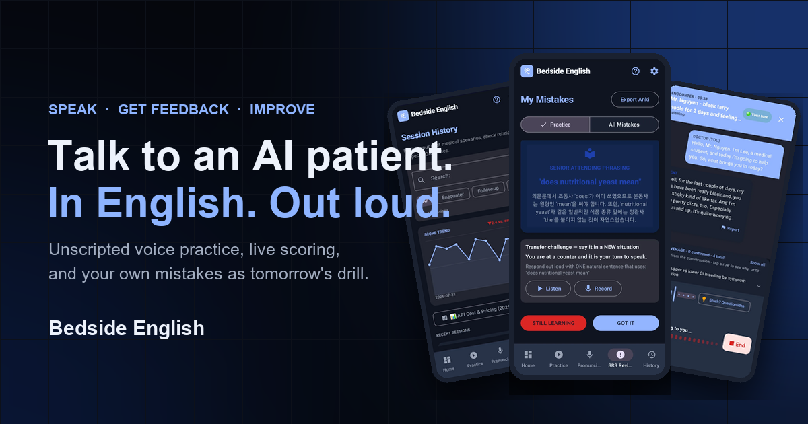

Depression: a four-week antidepressant follow-up
- Setting
- Primary care clinic
- Patient
- Ms. Mitchell, 29, returns four weeks after starting sertraline for depression.
- Read
- 4 min read
The chart for today’s visit
Four-week check-in after initiating sertraline for major depressive disorder. This is what the doctor knows before the conversation starts.
Last visit
Diagnosed with major depressive disorder four weeks ago with a baseline PHQ-9 of 18, and started on sertraline 50 mg daily along with a psychotherapy referral.
Current medicines
- Sertraline 50 mg once daily
Previous plan
- Reassess PHQ-9 and suicidal ideation at this visit
- Monitor for early sertraline side effects
- Confirm psychotherapy intake appointment
- Consider dose increase if response is partial
New results and observations
- PHQ-9 today 12, down from 18 at diagnosis
- No documented suicidal ideation at the prior visit
Today’s tasks
- Readminister the PHQ-9 and explicitly screen for suicidal ideation
- Review side effects, including any sexual or gastrointestinal symptoms
- Discuss whether to increase the sertraline dose or continue at the current dose
- Confirm psychotherapy referral status
- Update or create a safety plan
Say the doctor’s reply
Read the patient’s words, say your reply aloud, then reveal the model.
“I haven't called them yet. I kept meaning to, but on low days, making a phone call just feels like too much.”
Respond to the missed therapy call without blame, and offer a concrete way around the barrier.
Reveal the model reply
That makes complete sense. Low energy is part of depression, and one phone call can feel huge. Would it help if we booked it with you before you leave today, or asked the therapy office to contact you instead?
Full transcript
- Doctor
Hi, Ms. Mitchell. I'm Dr. Lee. It's good to see you. It's been four weeks since you started sertraline. How has your mood been overall?
- Patient
Better, I think. Maybe forty percent better? Not all the way. I still have low-energy days.
- Doctor
Forty percent is real progress at four weeks. You filled out the mood questionnaire again today, and your score is 12, down from 18 when we started. That fits with what you're describing: clearly better, but not where we want you to be yet. What would you like to get out of today?
- Patient
I want to know if the medicine is working enough, or if something needs to change.
- Doctor
That's exactly what we'll decide together. How has your sleep been?
- Patient
Better. I'm sleeping more normally now.
- Doctor
Good. I ask everyone this directly, because it matters. Have you had any thoughts that life isn't worth living?
- Patient
No. I've had low days, but nothing like that.
- Doctor
Thank you for answering that. Have you had any thoughts of harming yourself or ending your life?
- Patient
No, none at all.
- Doctor
Have you hurt yourself in any way, or felt more hopeless than before?
- Patient
No, I haven't hurt myself. The hopeless feeling isn't any worse than it was.
- Doctor
I'm glad to hear that. Let's talk about side effects. Some people get an upset stomach, trouble sleeping, or changes in their sex life, like lower desire or difficulty reaching orgasm. Have you noticed any of those?
- Patient
I felt sick the first week, but that's gone. The other thing, yes. My sex drive is lower, and it takes much longer to finish. It's embarrassing to talk about.
- Doctor
Thank you for telling me. It's a very common side effect of this type of medicine, and it's not something you have to just put up with. It also matters for the decision we're about to make.
- Patient
Okay. I wasn't sure whether I should mention it.
- Doctor
Please always do. The other part of the plan was therapy. How did it go with the referral?
- Patient
I haven't called them yet. I kept meaning to, but on low days, making a phone call just feels like too much.
- Doctor
That makes complete sense. Low energy is part of depression, and one phone call can feel huge. Would it help if we booked it with you before you leave today, or asked the therapy office to contact you instead?
- Patient
Yes, if someone here could help me book it, that would really help.
- Doctor
Let's do that before you go. Now, the medicine. At four weeks, you're partly better, and there are two reasonable options. One is to increase the dose, which often brings more improvement. The other is to stay on this dose a little longer, because sertraline can keep improving things over the next several weeks. A higher dose might make the sexual side effect more noticeable, and some people feel a bit more anxious or jittery for the first week or two. What are you thinking?
- Patient
I'd like to feel more like myself, so I'm open to increasing it. I'm just worried about more side effects.
- Doctor
That's a fair worry. If we increase it, we'll check in soon, and if the side effects get worse, there are options, like adjusting the dose or trying a different approach. You won't be stuck with it. Does increasing it feel right to you, or would you rather wait?
- Patient
Let's try increasing it, as long as I can tell you if it gets worse.
- Doctor
Absolutely. Please tell us. Let's also update your written safety plan together before you leave: the early signs that things are slipping for you, what helps you cope, and the people you can reach out to. It also helps to keep things you could use to hurt yourself, like extra medicine, out of easy reach. If you ever have thoughts of harming yourself, or you feel unsafe, call or text 988, the Suicide and Crisis Lifeline, at any time, or go to the nearest emergency room. During the day, you can also call our office. Could you tell me in your own words what we've agreed, and what you'd do if things felt unsafe?
- Patient
We're increasing the sertraline, we're booking the therapy appointment before I leave, and we're filling in my safety plan. I'll tell you if the side effects get worse or I feel more anxious. If I ever feel unsafe or think about hurting myself, I call or text 988, or go to the emergency room.
- Doctor
That's exactly right. We'll see you again in a couple of weeks to see how the new dose is going. You're doing the hard work, and it's showing.
The route through the visit
- Open with the patient’s own sense of change
- Share the questionnaire trend and set the agenda
- Ask directly about suicide and self-harm
- Normalize and name sensitive side effects
- Problem-solve the stalled therapy referral
- Lay out two options and decide together
- Update the safety plan with teach-back
Phrases to take into your next follow-up
- “I ask everyone this directly, because it matters.”
- Frames a suicide question as routine, not as a judgment about the patient.
- “Some people get an upset stomach, trouble sleeping, or changes in their sex life. Have you noticed any of those?”
- Names a sensitive side effect first so the patient does not have to.
- “It’s not something you have to just put up with.”
- Validates a side effect as worth treating.
- “Would it help if we booked it with you before you leave today?”
- Replaces a repeated instruction with concrete help.
- “You won’t be stuck with it.”
- Lowers the stakes of trying a change.
Practice this follow-up visit out loud
Run the visit in your own words, hear an AI patient respond, and use the feedback on your next attempt.

Tied to one reviewed case
This model uses a fictional Bedside English follow-up case as its source. The chart above is read directly from that case, and the page is checked against the same case and transcript fingerprints.
Editorial update: